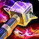
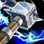
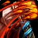
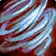
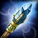

增强萨 PvP 判断训练器
增强萨的判断不是什么时候打，是什么时候花掉层数。


为什么？漩涡武器把近战和法术接成了一条链近战攒层 → 法术瞬发，两头都要顾▸你的近战攻击生成漩涡武器层数，层数让你的闪电类法术变成瞬发并大幅增伤。这意味着你的输出分成两段：贴脸攒、远处放。
所以增强萨最容易犯的错是「攒满了还在贴脸打」——层数已经溢出，多打的近战全浪费。攒够就该找机会结账，这跟纯近战「一直贴着打」的直觉相反。
该不该开？勾一下就知道
勾掉几条，就有多少胜算。
三个时钟
增强萨的节奏挂在这三个数字上。
近战攻击攒层，层数是你法术伤害的全部来源。
判断点：攒满之后每多打一下近战都是浪费。攒够了就该找机会把层数花掉——这是这个专精最核心的节奏感。

爆发时钟 ·两个都会让层数生成加快——所以爆发期间反而更容易溢出。开之前先把手上的层数花掉。

图腾时钟 · 地面上的牌你的很多能力放在地上▸图腾是可以被打掉的，而且有摆放位置的讲究——放太远吸不到，放太近容易被顺手清掉。
本版定盘（top50 三对三实测）
唤雷者（Stormbringer）36/50，图腾师（Totemic）14/50。
这不是 50/0 那种唯一解——有 28% 的人走另一条线。唤雷者围绕 Tempest（强化闪电）展开，图腾师围绕 Surging Totem 展开。多数派更强，但另一条线不是废的，这一格比多数专精的英雄天赋更有讨论空间。
Shamanism（50/50）—— 全员必带。嗜血冷却缩短到 60 秒、急速加成提高，且不再受疲惫限制——这意味着一局可以用很多次。
Burrow（48/50）钻地免疫并清减速、
三格 50 人 = 150 个选择，上面三项占了其中 141 个。